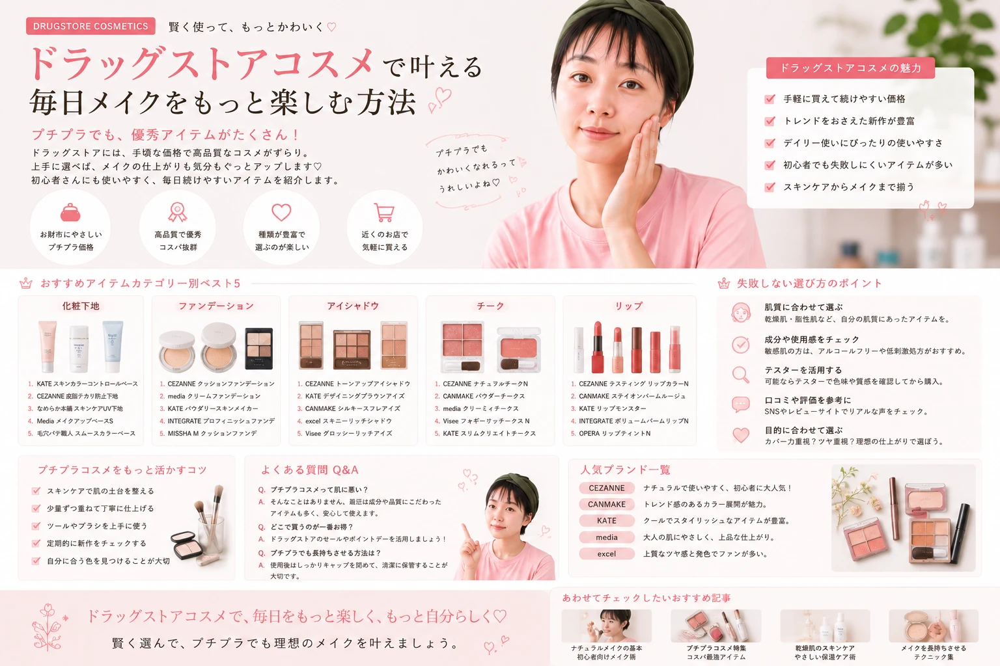

「ドラッグストアでコスメを買いたいけれど、
何を選べばいいかわからない」
「できるだけ手軽に、
毎日のメイクに使えるコスメを探したい」
そんなときにチェックしたいのが、
ドラッグストアなどで購入できる
身近なコスメです。
この記事では、
ドラッグストアコスメを選ぶときの
基本的なポイントから、
メイク初心者がチェックしたい
アイテムまでわかりやすく紹介します。
ドラッグストアコスメとは？
ドラッグストアでは、
日用品やスキンケア用品などと一緒に
メイクアップコスメを
見つけられることがあります。
身近な場所でチェックしやすく、
日常の買い物のついでに
コスメを探せるのが魅力のひとつです。
商品のラインナップは店舗によって異なるため、
気になる商品がある場合は
店頭や公式の商品情報などで
確認してみましょう。

身近なお店でコスメをチェック
「使ってみたい」を見つける場所
ドラッグストアコスメを探すときは、 価格だけではなく、 自分が普段どんなメイクをするのかを考えて、 必要なアイテムからチェックしてみましょう。
ドラッグストアでコスメを探すメリット
ドラッグストアでコスメを探す魅力は、
普段の生活の中で
気軽にチェックしやすいことです。
また、店舗によっては
テスターなどで色味を確認できる場合もあります。
ただし、すべての商品に
テスターが用意されているとは限らないため、
店舗で確認できる範囲で
商品情報をチェックしましょう。

店頭で商品を確認できるのも魅力
ACCESS
日常の買い物のついでに コスメをチェックしやすい。
CHECK
店舗によっては 商品を実際に確認できます。
DAILY
毎日のメイクに使う コスメを探しやすい。
店舗ごとに取り扱い商品や 在庫状況などが異なる場合があります。 欲しい商品がある場合は、 事前に店舗や公式情報などを 確認すると安心です。
メイク初心者が選ぶときのポイント
ドラッグストアには
さまざまな種類のコスメがあるため、
初心者の場合は
「何を買うか」を先に決めておくと
商品を選びやすくなります。
例えば、
「眉を整えたい」
「目元に色を足したい」
「リップを変えたい」など、
目的から考えてみましょう。

目的を決めてからコスメを探すと選びやすい
目的を決める
今のメイクで 変えたい部分を考えます。
カテゴリーを選ぶ
ベース、眉、目元、頬、 リップなどから選びます。
色を確認する
自分の肌や髪色、 普段のメイクとの相性を確認します。
使用方法を確認
商品の使い方や注意事項を 購入前に確認しましょう。
最初から全部揃える必要はありません
メイク初心者なら、
今必要なアイテムから
少しずつ揃えていく方法もあります。
まずは自分が使ってみたい
コスメをひとつ選んで、
使い方に慣れていきましょう。
ドラッグストアコスメをカテゴリー別にチェック
コスメを探すときは、
商品名だけでなく
カテゴリーから考えると
自分に必要なものを
見つけやすくなります。
ここからは、
毎日のメイクで使いやすい
主なカテゴリーをチェックしていきましょう。

欲しいカテゴリーを決めてから商品を探そう
ベースメイク
化粧下地やファンデーション、 フェイスパウダーなど。
アイブロウ
眉の形や色を整えて 顔の印象を調整します。
アイシャドウ
色や質感を使って 目元の印象を変えます。
アイライナー
目元の輪郭を整えて 印象を調整します。
チーク
頬に血色感をプラスして メイクをまとめます。
リップ
色や質感で 口元の印象を変えます。
ドラッグストアで選ぶベースメイク
ベースメイクは、
肌全体の印象を整える
メイクの土台となるアイテムです。
ドラッグストアで探す場合は、
化粧下地、ファンデーション、
コンシーラー、フェイスパウダーなど、
自分が必要としているアイテムを
先に決めておくと選びやすくなります。
仕上がりの好みも大切なポイントです。
自然な仕上がりが好きなのか、
さらっとした仕上がりが好きなのかなど、
普段のメイクをイメージしながら
選んでみましょう。

ベースメイクは仕上がりの好みから選ぼう
化粧下地
ファンデーションを使う前に 肌を整えるアイテム。 商品ごとの使用方法を確認して使います。
ファンデーション
肌全体の色や質感を整えたいときに。 自分の肌に合う色味を確認しましょう。
コンシーラー
気になる部分をポイントで カバーしたいときに使えるアイテム。
フェイスパウダー
ベースメイクの仕上げなどに 使用するアイテム。 使用方法を確認して取り入れましょう。
「全部買う」より必要なものから
ベースメイクには複数のアイテムがありますが、 最初からすべて揃える必要はありません。 今の自分に必要なアイテムを考えて、 少しずつ揃えていきましょう。
ドラッグストアで選ぶアイブロウ
アイブロウは、
眉の形や色を整えて
顔全体の印象を調整するアイテムです。
初心者の場合は、
いきなり眉全体を濃く描くのではなく、
自眉の足りない部分を
少しずつ補うように使うと
調整しやすくなります。
アイブロウには、
ペンシル、パウダー、眉マスカラなど
さまざまなタイプがあります。
自分が使いやすいタイプから
試してみましょう。

自眉を活かしながら少しずつ整える
アイブロウペンシル
眉の形を描いたり、 足りない部分をポイントで 補ったりするときに使いやすいタイプ。
アイブロウパウダー
ふんわりとした眉に 仕上げたいときに 取り入れやすいタイプ。
眉マスカラ
眉の色を変えたいときなどに 使用できるアイテム。 商品の使用方法を確認しましょう。
初心者向けアイブロウの基本
自眉の形を確認
まず自分の眉の形を確認し、 足りない部分をチェックします。
足りない部分を描く
一度に濃く描かず、 少しずつ色を足していきます。
全体をなじませる
色の濃さを確認しながら、 自然になじむように整えます。
アイブロウの色は、 髪色や肌の色、使用するアイテムによって 見え方が異なる場合があります。 商品の色味を確認して選びましょう。
ドラッグストアで選ぶアイシャドウ
アイシャドウは、
色や質感によって
目元の雰囲気を変えられるアイテムです。
初心者なら、
ベージュやブラウンなど
普段のメイクに取り入れやすい
色から始めるのもおすすめです。
慣れてきたら、
ピンクやオレンジなど、
いつもと違うカラーを
ポイントとして取り入れるのも
楽しみ方のひとつです。

初心者は使いやすいカラーから試してみよう
ベージュ・ブラウン
普段のメイクに 取り入れやすい定番カラー。
ピンク系
やわらかく かわいらしい印象にしたいときに。
オレンジ系
明るくフレッシュな 雰囲気を楽しみたいときに。
アイシャドウの基本的な使い方
-
ベースカラーを薄くのせる
まぶた全体に薄く色をのせて、 目元のベースを整えます。
-
メインカラーを重ねる
目元の印象を見ながら、 必要な部分に少しずつ重ねます。
-
締めカラーをポイント使い
目のキワなどに少量使って、 目元を引き締めます。
-
境目をぼかす
色の境目を軽くぼかして、 自然になじませます。
最初は薄く、足りなければ重ねる
アイシャドウは一度に濃く塗らず、 少量ずつ重ねることで 色の濃さを調整しやすくなります。
ドラッグストアで選ぶアイライナー
アイライナーは、
目元の輪郭を整えて
印象を調整するためのアイテムです。
ドラッグストアでは
ペンシルタイプやリキッドタイプなど、
さまざまなタイプの商品を
見つけられることがあります。
初心者なら、
まずは細く描いてから
必要な部分を少しずつ足していくと、
ラインの濃さや長さを
調整しやすくなります。

アイラインは細く描いてから少しずつ調整
ペンシルタイプ
やわらかなラインを 作りたいときなどに。 商品によって描き心地が異なります。
リキッドタイプ
目尻などを くっきり仕上げたいときに。 少しずつ描くのがポイントです。
ジェルタイプ
なめらかな描き心地を 好む人がチェックしやすいタイプ。 商品の特徴を確認しましょう。
初心者向けアイラインのポイント
鏡を見ながら少しずつ
一度に長いラインを描かず、 短い線をつなげるように 少しずつ描きます。
目のキワを意識する
まつ毛の生え際などを確認しながら、 自分の目元に合わせて ラインを調整します。
目尻を調整する
長さや角度を確認しながら、 必要な分だけ少しずつ足します。
アイライナーは目元に使用するため、 商品の使用方法や注意事項を確認し、 肌に異常を感じた場合は使用を中止してください。
ドラッグストアで選ぶチーク
チークは、
頬に血色感をプラスして、
メイク全体の印象をまとめるアイテムです。
初心者の場合は、
肌になじみやすいカラーから
試してみると取り入れやすいでしょう。
一度にたくさんの量をのせるのではなく、
少量ずつ重ねながら
自分の好みの濃さに調整するのがポイントです。

チークは少量ずつ重ねて自然な血色感に
ナチュラル
薄くふんわり色をのせて、 自然な血色感を楽しみたいときに。
やわらかカラー
やさしい印象のメイクに 合わせやすいカラー。
ポイントカラー
いつものメイクに 少し違った雰囲気を加えたいときに。
チークを自然に仕上げるポイント
少量を取る
最初は少なめに取り、 必要に応じて後から重ねます。
頬に軽くのせる
鏡で左右のバランスを確認しながら 少しずつ色を足します。
境目をなじませる
色が急に濃く見える部分を 軽くぼかして自然になじませます。
チークは商品や肌の状態、 光の当たり方などによって 色の見え方が変わる場合があります。 購入前に色味を確認しましょう。
ドラッグストアで選ぶリップ
リップは、
メイク全体の印象を
大きく変えやすいアイテムです。
普段使いするなら、
自分のメイクに合わせやすい
ナチュラルなカラーから
探してみるのもよいでしょう。
反対に、
いつもと違うメイクを楽しみたい場合は、
普段選ばないカラーを
ポイントとして取り入れる方法もあります。

リップはメイク全体とのバランスを考えて選ぼう
デイリーカラー
普段のメイクに 取り入れやすいカラー。
ソフトカラー
やわらかく落ち着いた 雰囲気を作りたいときに。
アクセントカラー
リップを主役にした メイクを楽しみたいときに。
リップ選びでチェックしたいこと
色味
自分の肌や普段のメイクに 合わせやすい色か確認します。
質感
ツヤ感やマット感など、 自分が好きな仕上がりを確認します。
手持ちコスメとの相性
アイシャドウやチークなど、 すでに持っているアイテムとの 組み合わせも考えてみましょう。
リップを変えるだけでも印象は変わる
同じベースメイクやアイメイクでも、 リップの色や質感を変えることで 全体の雰囲気を変えられます。 まずは普段使いしやすいカラーから 試してみましょう。
ドラッグストアコスメを組み合わせて楽しむ
コスメは単体で選ぶだけではなく、
手持ちのアイテムとの組み合わせを
考えることも大切です。
例えば、
アイメイクを主役にする日は
リップを控えめにするなど、
メイク全体のバランスを考えると
まとまりやすくなります。

手持ちのコスメと組み合わせて楽しもう
ナチュラルメイク
- 肌は自然に整える
- 眉は薄く自然に
- ベージュ・ブラウン系を中心に
- リップはなじみやすいカラー
アイメイク重視
- ベースはナチュラルに
- 眉を整える
- アイシャドウを主役にする
- リップは控えめにする
リップ主役
- 肌を自然に整える
- 眉はナチュラルに
- アイメイクは控えめに
- リップでアクセントを作る
すべてのパーツを濃くするのではなく、 「今日は目元を主役にする」 「今日はリップを主役にする」など、 メイクの主役をひとつ決めると 全体をまとめやすくなります。
ドラッグストアコスメで作る基本のメイク順
コスメを買ったものの、
「どの順番で使えばいいかわからない」
という場合は、
基本的なメイクの流れを
知っておくと使いやすくなります。
ただし、
商品によって使用方法や推奨される順番が
異なる場合があります。
実際に使用するときは、
各商品の説明も確認しましょう。

スキンケア
メイク前に肌を整えます。
ベースメイク
化粧下地やファンデーションなどで 肌全体を整えます。
アイブロウ
眉の形や色を整えます。
アイシャドウ
目元に色や立体感を加えます。
アイライナー
必要に応じて目元の輪郭を整えます。
チーク
頬に血色感をプラスします。
リップ
最後に口元を整えて仕上げます。
初心者は少ないアイテムから始めよう
すべてのアイテムを最初から揃える必要はありません。 自分が必要だと思うものから少しずつ取り入れて、 使い方に慣れていきましょう。
ドラッグストアコスメを選ぶときのチェックポイント
商品を選ぶときは、 価格やパッケージだけでなく、 自分が実際に使う場面を イメージすることが大切です。
使う目的
何のために購入するのかを 最初に決めましょう。
カラー
自分の肌や髪色、 普段のメイクとの相性を確認します。
仕上がり
ツヤ、マット、ナチュラルなど、 好みの仕上がりを考えます。
使いやすさ
自分が無理なく使い続けられる アイテムか確認しましょう。

商品の価格、在庫、取り扱い状況、 カラー展開などは販売店や時期によって 変更される場合があります。 購入時には最新の商品情報を確認してください。
ドラッグストアコスメを買う前の最終チェック
気になるコスメを見つけたら、 購入する前にいくつかのポイントを 確認しておきましょう。
何のために買う？
「眉を整えたい」 「目元に色を足したい」など、 購入する目的を明確にしておきましょう。
手持ちのコスメと合う？
すでに持っている アイシャドウやチーク、 リップなどとの組み合わせも 考えてみましょう。
カラーは自分に合いそう？
商品ページやパッケージ、 店頭で確認できる情報などを参考に、 色味を確認しましょう。
使用方法を確認した？
商品ごとの使用方法や 注意事項を確認してから 使用しましょう。
最新の価格を確認した？
価格は販売店や時期によって 変わる場合があります。 購入時の価格を確認しましょう。
店舗の在庫を確認した？
店舗によって取り扱い商品や 在庫状況が異なる場合があります。

購入前に必要なポイントをチェック
ドラッグストアコスメ初心者は何から選ぶ？
初めてドラッグストアコスメを探すなら、 まずは普段のメイクで 「変えてみたい」と思う部分を ひとつ決めてみましょう。
肌を整えたい
化粧下地やファンデーションなど、 ベースメイクからチェック。
眉を変えたい
アイブロウペンシルや パウダーなどからチェック。
目元を変えたい
アイシャドウや アイライナーをチェック。
血色感を足したい
チークやリップから 探してみましょう。

身近なコスメから、少しずつ楽しもう
ドラッグストアコスメを選ぶときは、
価格だけでなく、
自分がどんなメイクをしたいのかを
考えて選ぶことが大切です。
まずは必要なアイテムをひとつ選び、
実際に使いながら
自分に合うカラーや仕上がりを
見つけていきましょう。
ドラッグストアコスメ FAQ
ドラッグストアコスメとは何ですか？
ドラッグストアなどで購入できる メイクアップコスメを、 この記事では 「ドラッグストアコスメ」として紹介しています。 店舗によって取り扱い商品は異なります。
メイク初心者は何から買えばいいですか？
まずは自分が変えてみたい部分を ひとつ決めるのがおすすめです。 眉ならアイブロウ、 目元ならアイシャドウなど、 目的に合わせて選びましょう。
ドラッグストアコスメは安いですか？
商品によって価格は異なります。 「ドラッグストアで買えるから 必ず安い」と決めつけるのではなく、 購入時の価格を確認しましょう。
初心者におすすめのカラーはありますか？
好みや肌の色などによって 合うカラーは異なります。 普段のメイクに取り入れやすい色から 試してみるのもひとつの方法です。
店舗に欲しいコスメがありません。
店舗によって取り扱い商品や 在庫状況が異なる場合があります。 商品の公式情報や販売店の情報などを 確認してみましょう。
ドラッグストアでテスターは使えますか？
テスターの有無は 商品や店舗によって異なります。 店頭で確認できる場合は、 店舗の案内に従って利用しましょう。
ドラッグストアコスメの選び方まとめ
ドラッグストアでコスメを選ぶときは、 「安いから」「人気だから」だけではなく、 自分が必要としているものを考えることが大切です。
まず購入する目的を決める
欲しいカテゴリーを選ぶ
カラーや仕上がりを確認する
手持ちのコスメとの相性を考える
購入前に価格や在庫を確認する
使用方法や注意事項を確認する


次は、あなたに合う
コスメを探してみよう。
メイク・スキンケア・ファッションを 初心者にもわかりやすく紹介しています。